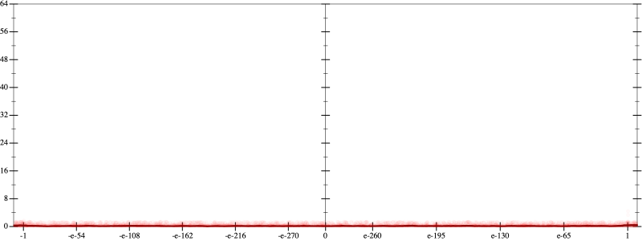
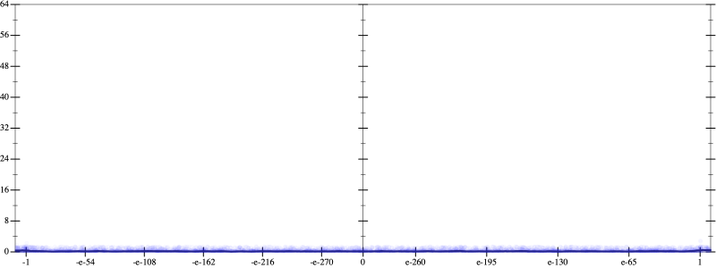
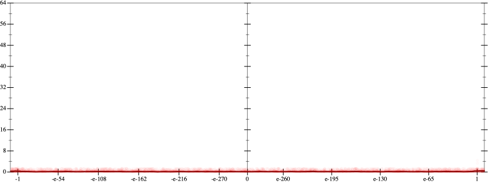
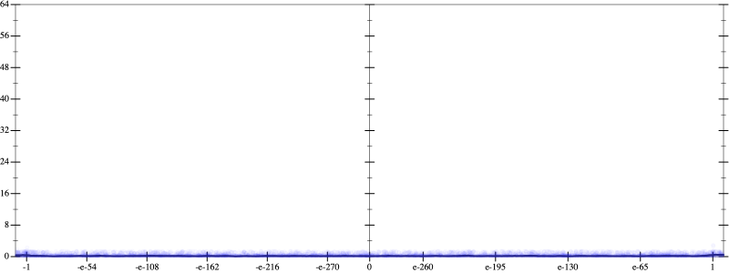
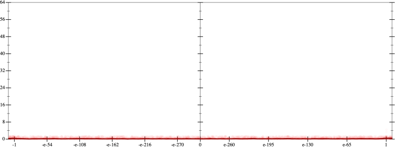
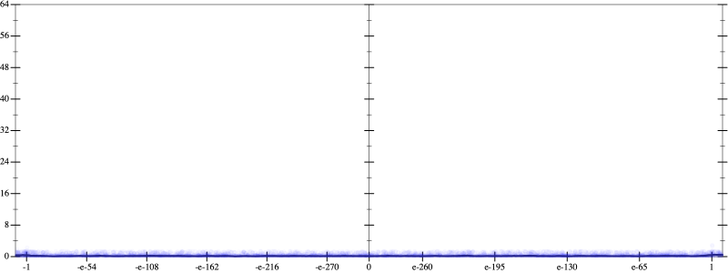

Error
 
Bits error versus x
Bits error versus x
Results
Initial program 0.2
rmApplied associate-*r*0.2
Time bar (total: 3.0m)Debug log
herbie shell --seed 1237834542
(FPCore (x)
:name "3"
:pre (and (>= x -10000000000.0) (<= x 10000000000.0))
(+ (* -1.5 x) (* 2.5 (* (* x x) x))))